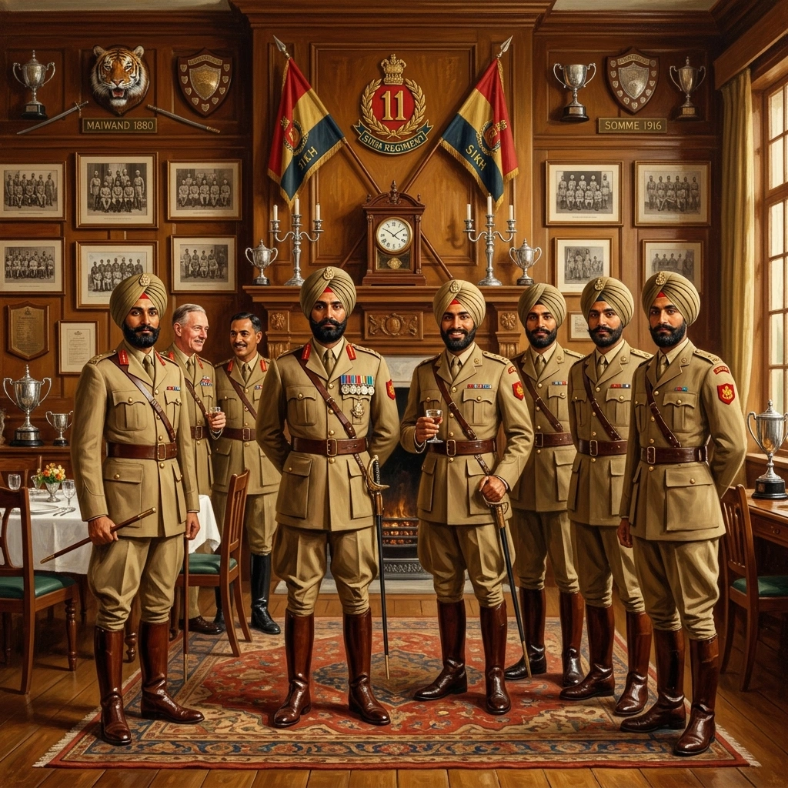

ਸਨਮਾਨ ਅਤੇ ਭਾਰਤੀਕਰਣ


ਸਿਰਲੇਖ: Honours and Indianisation
ਸ਼੍ਰੇਣੀ: Honours and Indianisation
ਕਲਾਕਾਰ: ਸਿੱਖ ਰੈਜੀਮੈਂਟal Centre
ਸਾਲ: ਇਤਿਹਾਸਕ
ਸ਼੍ਰੇਣੀ: Honours and Indianisation
ਕਲਾਕਾਰ: ਸਿੱਖ ਰੈਜੀਮੈਂਟal Centre
ਸਾਲ: ਇਤਿਹਾਸਕ
ਸਨਮਾਨ ਅਤੇ ਭਾਰਤੀਕਰਣ
1935 ਵਿੱਚ, 2/11 ਸਿੱਖ ਨੇ ਵਿਨਾਸ਼ਕਾਰੀ ਕਵੇਟਾ ਭੂਚਾਲ ਤੋਂ ਬਾਅਦ, ਆਪਣੇ ਖੁਦ ਦੇ ਜਾਨੀ ਨੁਕਸਾਨ ਦੇ ਬਾਵਜੂਦ ਸ਼ਾਨਦਾਰ ਬਚਾਅ ਅਤੇ ਸੁਰੱਖਿਆ ਸੇਵਾ ਨਿਭਾਈ। ਵਾਇਸਰਾਏ, ਅਰਲ ਆਫ ਵਿਲਿੰਗਡਨ ਨੇ ਬਟਾਲੀਅਨ ਨੂੰ ਪ੍ਰਸ਼ੰਸਾ ਦਾ ਸਰਟੀਫਿਕੇਟ ਦਿੱਤਾ। 1 ਜੂਨ 1935 ਨੂੰ, 1846 ਤੋਂ ਇਸਦੀ ਵਿਲੱਖਣ ਸੇਵਾ ਦੇ ਸਨਮਾਨ ਵਜੋਂ, ਇਸਨੂੰ "ਰਾਇਲ" ਦਾ ਖਿਤਾਬ ਦਿੱਤਾ ਗਿਆ। ਇਸ ਮਿਆਦ ਨੇ ਅਫਸਰ ਕੋਰ ਦੇ ਹੌਲੀ-ਹੌਲੀ ਭਾਰਤੀਕਰਨ ਨੂੰ ਵੀ ਦਰਸਾਇਆ। ਲੈਫਟੀਨੈਂਟ ਠਾਕੁਰ ਸਿੰਘ, ਐਮਸੀ, ਅਤੇ ਲੈਫਟੀਨੈਂਟ ਮਿਤ ਸਿੰਘ, ਐਮਸੀ, ਆਈਡੀਐਸਐਮ ਅਤੇ ਬਾਰ, ਦੋਵੇਂ 5/11 ਸਿੱਖ, ਮਹਾਨ ਯੁੱਧ ਤੋਂ ਬਾਅਦ ਕਿੰਗਜ਼ ਕਮਿਸ਼ਨ ਦੁਆਰਾ ਪ੍ਰਦਾਨ ਕੀਤੇ ਗਏ ਪਹਿਲੇ ਪੰਜ ਭਾਰਤੀ ਜੇਸੀਓਜ਼ ਵਿੱਚੋਂ ਸਨ। ਦਸੰਬਰ 1934 ਤੋਂ, 5/11 ਸਿੱਖ ਭਾਰਤੀ ਮਿਲਟਰੀ ਅਕੈਡਮੀ ਦੇ ਗ੍ਰੈਜੂਏਟ ਪ੍ਰਾਪਤ ਕਰਨ ਲਈ ਰੈਜੀਮੈਂਟ ਦੀ ਚੁਣੀ ਗਈ ਬਟਾਲੀਅਨ ਬਣ ਗਈ। ਪਹਿਲੇ ਸੈਕਿੰਡ ਲੈਫਟੀਨੈਂਟ ਦੀਵਾਨ ਰਣਜੀਤ ਰਾਏ ਅਤੇ ਮਿਰਜ਼ਾ ਹਾਮਿਦ ਹੁਸੈਨ ਸਨ, ਉਸ ਤੋਂ ਬਾਅਦ 1935 ਅਤੇ 1940 ਦੇ ਵਿਚਕਾਰ ਹਰਬਖਸ਼ ਸਿੰਘ, ਭਾਗ ਸਿੰਘ, ਐਮ.ਐਸ. ਢਿੱਲੋਂ, ਕੇ.ਕੇ. ਭੰਡਾਰੀ, ਮਹਿੰਦਰ ਸਿੰਘ, ਪੀ.ਪੀ. ਸਿੰਘ, ਵਾਈ.ਐਸ. ਪੰਵਾਰ ਅਤੇ ਗੁਰਮੀਤ ਸਿੰਘ। ਇਹਨਾਂ ਘਟਨਾਵਾਂ ਨੇ ਸੰਗਠਨਾਤਮਕ ਅਤੇ ਲੀਡਰਸ਼ਿਪ ਬੁਨਿਆਦ ਬਣਾਈ ਜਿਸ ਨਾਲ ਰੈਜੀਮੈਂਟ ਦੂਜੇ ਵਿਸ਼ਵ ਯੁੱਧ ਵਿੱਚ ਦਾਖਲ ਹੋਈ।
1935 ਵਿੱਚ, 2/11 ਸਿੱਖ ਨੇ ਵਿਨਾਸ਼ਕਾਰੀ ਕਵੇਟਾ ਭੂਚਾਲ ਤੋਂ ਬਾਅਦ, ਆਪਣੇ ਖੁਦ ਦੇ ਜਾਨੀ ਨੁਕਸਾਨ ਦੇ ਬਾਵਜੂਦ ਸ਼ਾਨਦਾਰ ਬਚਾਅ ਅਤੇ ਸੁਰੱਖਿਆ ਸੇਵਾ ਨਿਭਾਈ। ਵਾਇਸਰਾਏ, ਅਰਲ ਆਫ ਵਿਲਿੰਗਡਨ ਨੇ ਬਟਾਲੀਅਨ ਨੂੰ ਪ੍ਰਸ਼ੰਸਾ ਦਾ ਸਰਟੀਫਿਕੇਟ ਦਿੱਤਾ। 1 ਜੂਨ 1935 ਨੂੰ, 1846 ਤੋਂ ਇਸਦੀ ਵਿਲੱਖਣ ਸੇਵਾ ਦੇ ਸਨਮਾਨ ਵਜੋਂ, ਇਸਨੂੰ "ਰਾਇਲ" ਦਾ ਖਿਤਾਬ ਦਿੱਤਾ ਗਿਆ। ਇਸ ਮਿਆਦ ਨੇ ਅਫਸਰ ਕੋਰ ਦੇ ਹੌਲੀ-ਹੌਲੀ ਭਾਰਤੀਕਰਨ ਨੂੰ ਵੀ ਦਰਸਾਇਆ। ਲੈਫਟੀਨੈਂਟ ਠਾਕੁਰ ਸਿੰਘ, ਐਮਸੀ, ਅਤੇ ਲੈਫਟੀਨੈਂਟ ਮਿਤ ਸਿੰਘ, ਐਮਸੀ, ਆਈਡੀਐਸਐਮ ਅਤੇ ਬਾਰ, ਦੋਵੇਂ 5/11 ਸਿੱਖ, ਮਹਾਨ ਯੁੱਧ ਤੋਂ ਬਾਅਦ ਕਿੰਗਜ਼ ਕਮਿਸ਼ਨ ਦੁਆਰਾ ਪ੍ਰਦਾਨ ਕੀਤੇ ਗਏ ਪਹਿਲੇ ਪੰਜ ਭਾਰਤੀ ਜੇਸੀਓਜ਼ ਵਿੱਚੋਂ ਸਨ। ਦਸੰਬਰ 1934 ਤੋਂ, 5/11 ਸਿੱਖ ਭਾਰਤੀ ਮਿਲਟਰੀ ਅਕੈਡਮੀ ਦੇ ਗ੍ਰੈਜੂਏਟ ਪ੍ਰਾਪਤ ਕਰਨ ਲਈ ਰੈਜੀਮੈਂਟ ਦੀ ਚੁਣੀ ਗਈ ਬਟਾਲੀਅਨ ਬਣ ਗਈ। ਪਹਿਲੇ ਸੈਕਿੰਡ ਲੈਫਟੀਨੈਂਟ ਦੀਵਾਨ ਰਣਜੀਤ ਰਾਏ ਅਤੇ ਮਿਰਜ਼ਾ ਹਾਮਿਦ ਹੁਸੈਨ ਸਨ, ਉਸ ਤੋਂ ਬਾਅਦ 1935 ਅਤੇ 1940 ਦੇ ਵਿਚਕਾਰ ਹਰਬਖਸ਼ ਸਿੰਘ, ਭਾਗ ਸਿੰਘ, ਐਮ.ਐਸ. ਢਿੱਲੋਂ, ਕੇ.ਕੇ. ਭੰਡਾਰੀ, ਮਹਿੰਦਰ ਸਿੰਘ, ਪੀ.ਪੀ. ਸਿੰਘ, ਵਾਈ.ਐਸ. ਪੰਵਾਰ ਅਤੇ ਗੁਰਮੀਤ ਸਿੰਘ। ਇਹਨਾਂ ਘਟਨਾਵਾਂ ਨੇ ਸੰਗਠਨਾਤਮਕ ਅਤੇ ਲੀਡਰਸ਼ਿਪ ਬੁਨਿਆਦ ਬਣਾਈ ਜਿਸ ਨਾਲ ਰੈਜੀਮੈਂਟ ਦੂਜੇ ਵਿਸ਼ਵ ਯੁੱਧ ਵਿੱਚ ਦਾਖਲ ਹੋਈ।
ਮੋਬਾਈਲ 'ਤੇ ਖੋਲ੍ਹੋ
ਆਪਣੇ ਫ਼ੋਨ 'ਤੇ ਇਸ ਕਲਾ ਰਿਕਾਰਡ ਨੂੰ ਦੇਖਣ ਲਈ ਸਕੈਨ ਕਰੋ।